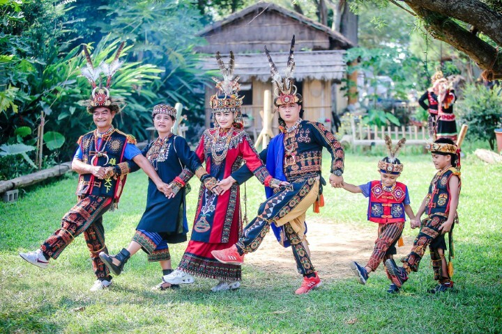
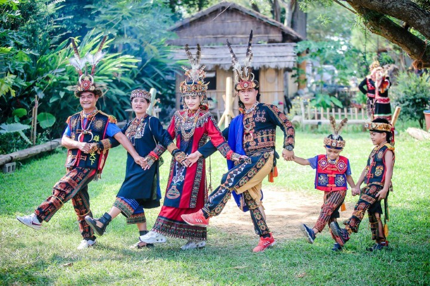

族群介紹
排灣族主要分布於屏東、台東南部的山區， 族群社會擁有明顯的階級制度，包含：貴族、頭目與平民制度。 著名的文化象徵包含：百步蛇圖騰、琉璃珠、陶壺。 每一種圖紋、器物都代表家族的身分、歷史與傳承。
地理位置（Google 地圖示意）
景點特色
以下為幾個與排灣族文化、歷史及地景相關的重要地點：
| 地點名稱 | 所在縣市 | 特色說明 |
|---|---|---|
| 三地門鄉（琉璃珠文化） | 屏東縣 | 以排灣族琉璃珠、雕刻與傳統工藝聞名，是認識排灣族藝術與圖騰的重要地點。 |
| 霧台鄉石板屋聚落 | 屏東縣 | 聚落中保留傳統石板屋建築與貴族制度的文化痕跡，展現排灣族獨特的建築美學。 |
| 大武山周邊部落 | 屏東 / 台東 | 大武山被視為神聖山域，周邊部落擁有許多與祖靈、山林信仰相關的傳說與祭儀。 |
飲食文化
排灣族的飲食常結合山林資源與祭儀文化，以下列出幾項具有代表性的料理與食材：
| 料理名稱／食物 | 主要食材 | 文化特色說明 |
|---|---|---|
| 小米與黏稻料理 | 小米、糯米、地瓜等 | 小米是排灣族重要的傳統作物，常出現在祭典與慶祝活動中，象徵豐收與祝福。 |
| 燻肉／鹹豬肉 | 豬肉、鹽巴、香料 | 透過醃製與燻乾保存肉類，常在祭典或家族聚會時分享，體現共享與款待的文化。 |
| 野菜與山林料理 | 山蘇、過貓、野生蔬菜 | 善用山林採集的野菜與植物入菜，展現排灣族與自然環境緊密互動的傳統智慧。 |
照片與影片介紹
部落／祭典照片
 

以上為排灣族的衣著特色。
影片介紹
以上為排灣族的文化介紹影片。